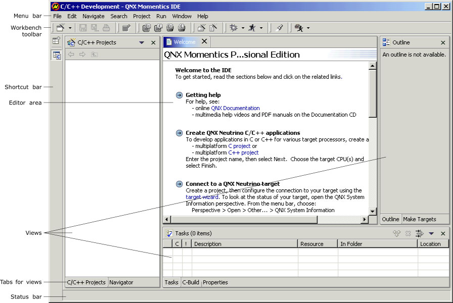

This chapter introduces a number of terms and concepts that are used throughout this guide and the core Eclipse documentation.
Related information:
The workbench is the window that appears when you run the IDE. It includes:

Major components of the IDE workbench.
|
Eclipse is written in JAVA and is interpreted by a Java Virtual Machine (JVM) that's specific to the host OS. So, whether you run Eclipse on Windows, QNX Neutrino, or Solaris, you're running the same code. However, you might notice some differences in the user interface. |
The CDT provides a graphical development environment for C and C++ developers. The CDT works in a complimentary manner with many of the same tools that you use on the command line. The CDT communicates with and interprets messages from many utilities, including:
A perspective is a task-oriented configuration of the workbench window.
For example, if you're debugging, you use the preconfigured Debug perspective. This perspective sets up the IDE to show all the tools related to debugging, but doesn't show the elements and tools related to profiling, for example. You can customize a perspective by adding and removing views.
Perspectives generally consist of these components:
Editors are what you use to change the content of your files. Each editor in the IDE is for a specific set of files. The editor that you'll likely use the most for C and C++ development is the C/C++ Editor.
Views take information and organize it in various convenient ways. For example, the Outline view shows you a list of all the function names when you're editing a C file in the C/C++ Editor. The Outline view is dynamic; if you declare a function called mynewfunc(), the Outline view immediately lists it, even if you haven't saved the file yet.
Views provide:
Different views may show you different interpretations of the same information. For example, the Navigator view shows all your projects; the C/C++ Projects view shows just the C and C++ projects you have open.
The editor area is a section of the workbench window reserved for editors. All the editors live together in the editor area; all the views can be anywhere except in the editor area.
The IDE lets you rearrange views and editors so they're beside each other (tiled) or stacked on top of each other (tabbed), among other possibilities.
To see how dynamic the interface is, see the Perspectives, Views, and Editors movie.
Projects are generic containers for your source code, makefiles, and binaries. Before you do any work in the IDE, you must create projects to store your work. Developers using the CDT will most ofent work with C Project.
Projects can be open or closed. If they're closed, you can't access them.
When you create a file within a project, the IDE also creates a record (local history) of every time you changed that file and how you changed it.
Your workspace is where you keep your projects. For the exact location of your workspace, see the appendix Where Files Are Stored.
|
Don't use spaces in projects and filenames; they can cause problems with some tools, such as the make utility.
Also, don't use case alone to distinguish files and projects; Unix-based OS filenames are case-sensitive, but Windows filenames aren't. Thus, Hello.c and hello.c overwrite each other in Windows, but are separate files elsewhere. |
The IDE associates projects with natures, tags that tell the IDE about the properties of each project.
The IDE doesn't support nested projects; each project must be organized as a discrete entity. The IDE does support project dependencies by allowing a project to reference other projects that reside in your workspace.
The most common projects look like this to the IDE:
| Project | Associated natures |
|---|---|
| Simple Project | |
| Standard Make C Application Project | C |
| Standard Make C++ Application Project | C, C++ |
The natures tell the IDE what can and can't be done with each project. The IDE also uses the natures to filter out projects that would be contextually irrelevant (e.g. nonlibrary projects from a list of library projects).
In this guide, you'll see mixed references such as:
The IDE saves these natures and other information in .project and .cdtproject files in each project. To ensure the natures persist in CVS, include these files when you commit your project.
Before you run any program, you must use the launcher to specify what program to run, what arguments to pass to the program, and so on.
If you want to run the program with different you can either modify an existing launch configuration or create a new Launch Configuration. Once you save the Launch Configuration, you can quickly rerun each configuration.
Resources is a collective term for projects, folders, and files that exist in the workbench. You store all your resources in your workspace.
Wizards guide you through a sequenced set of tasks. For example, to create a QNX C Application Project, you run a wizard that takes you through all the steps and gathers all the necessary information before creating the project. For more information, see the Common Wizards chapter.